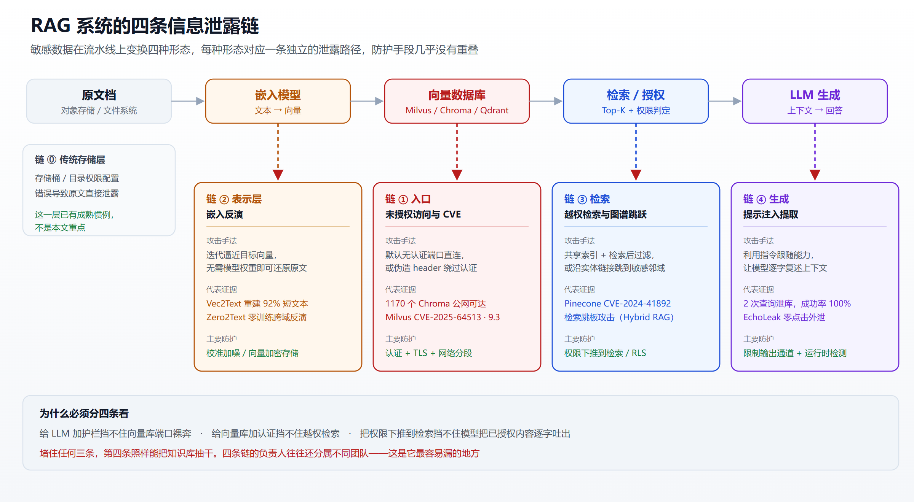
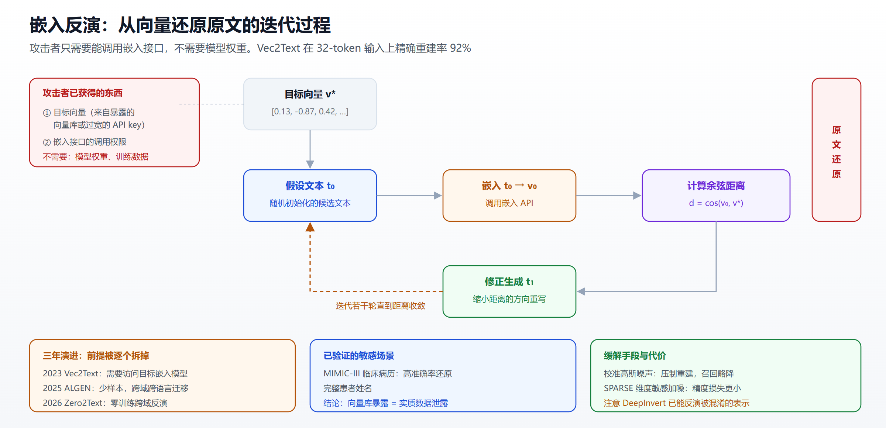
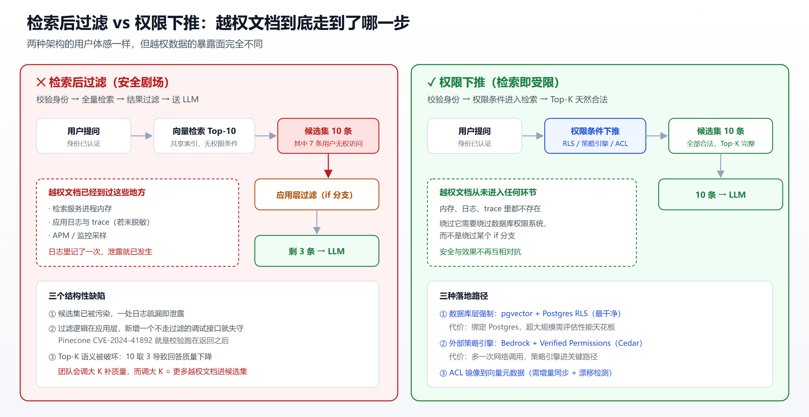
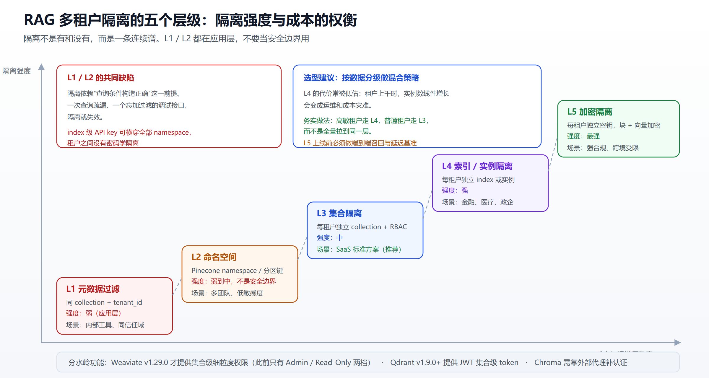

RAG 的四条泄露链：从向量库裸奔到知识库被逐字抽干
摘要
企业把 RAG 当成"安全地用大模型"的方案：数据不出企业、不进训练集、随时可撤回。这个判断在数据主权上是对的，在信息泄露上是错的。
2025 年 4 月，UpGuard 全网扫到 1170 个可公网访问的 Chroma 实例，其中约三分之一对匿名请求直接返回数据。Milvus 的一个认证绕过漏洞，绕过方式是伪造一个 HTTP header，而 header 里要填的常量就写在开源仓库里。Cornell 团队的 Vec2Text 能从 embedding 精确重建 92% 的短文本——所谓"向量是脱敏数据"的假设直接崩掉。哈佛与 CMU 的研究者对 25 个随机挑选的商用 GPTs 发起攻击，用最多 2 次查询实现了 100% 的知识库泄露。
这些不是同一个漏洞的不同说法，而是四条彼此独立的泄露链：入口链（向量库未授权访问与 CVE）、表示层链（嵌入反演）、检索链（越权检索与图谱跳跃）、生成链（提示注入提取与系统提示泄露）。四条链共用同一份数据，但攻击面、防护手段、责任归属完全不同。堵住任何三条，第四条照样能把知识库抽干。
以下逐条拆解，配上真实事故和可执行的加固动作。
序言：一个 4315 个集合的向量库，对任何人开放
2025 年 4 月，安全公司 UpGuard 做了一件很朴素的事：扫全网的 Chroma 默认端口，然后对每个响应的 IP 调用 list_collections，再对每个集合调用 get_collection。
结果是 1170 个可访问实例，其中约 406 个（差不多三分之一）对匿名请求返回了真实数据。剩下三分之二返回认证错误或者是空库。
如果只看这两个数字，还可以辩解说"暴露的多半是开发环境"。但 UpGuard 补了一个关键细节：这 406 个里有 60% 拥有一个以上的 collection。测试实例通常只有一个集合，跑完 demo 就丢在那儿；多集合意味着有人在按业务维度组织数据。而其中最极端的一个实例，有 4315 个 collection。
这不是谁忘了关的实验环境。这是生产。
UpGuard 后来还从一个暴露的 Chroma 库里追出了完整的供应链：俄罗斯 AI 聊天机器人公司 My Jedai 的向量库无认证暴露，341 个文档集合，最大的单个集合 104MB，内容多为西里尔字母文本——而这些集合正是用来驱动不同客户的聊天机器人回答的知识源，其中牵连到了 Canva 创作者的数据。
同一时期还有另一条线索：印度最大的房产平台，一个 MCP server 部署在云主机上、端口对公网开放且不要求认证，任何人都可以对底层数据库直接发起查询。这个失败模式和 Chroma 一模一样，只是换了个协议名字。
而更早的 2025 年 1 月，Wiz 发现 DeepSeek 的一个 ClickHouse 实例公网可访问且无任何认证，100 万+ 条日志里有明文聊天记录、API 密钥、后端服务细节，研究者甚至拿到了完整的数据库操作权限。
把这几件事串起来看，能得出一个不太舒服的结论：AI 基础设施正在重复 2015 年前后 MongoDB / Elasticsearch 裸奔的那一轮历史，只不过这次库里装的不是用户表，而是企业最核心的合同、病历、代码和财报——以高保真的向量形式。

一、为什么要按"四条链"来看
大多数团队谈 RAG 安全时，脑子里有一个隐含的模型：LLM 是安全边界。于是精力全砸在 LLM 那一层——输入过滤、输出审核、拒答策略、API key 管控。向量库被默认放在"边界之内"，跑在内网，配置保持出厂默认。
这个心智模型的问题是，它假设数据只有一条路径能出去：用户提问 → LLM 回答。而真实的 RAG 架构里，敏感数据要穿过四个形态：
| 形态 | 所在位置 | 谁能读到 | 泄露方式 |
|---|---|---|---|
| 原文档 | 对象存储 / 文件系统 | 运维、摄入服务 | 存储桶权限配置错误 |
| 向量 | 向量数据库 | 应用层、任何能连到端口的人 | 未授权访问 + 嵌入反演 |
| 检索结果 | 内存 / 请求上下文 | 检索服务、LLM | 越权检索、图谱跳跃 |
| 生成文本 | 用户界面 / 日志 | 终端用户、日志系统 | 提示注入提取、系统提示泄露 |
四个形态对应四条独立的泄露链。它们的防护手段几乎没有重叠：给 LLM 加护栏挡不住向量库端口裸奔；给向量库加认证挡不住越权检索；把权限下推到检索层挡不住提示注入把已授权的内容逐字吐出来。
OWASP 在 2025 版 LLM Top 10 里做了两个动作，正是对这个现实的确认：
- 新增 LLM08 "Vector and Embedding Weaknesses"，下设五个子类——嵌入未授权访问、多租户上下文泄露、数据投毒、嵌入反演、数据联邦冲突。RAG 成为企业 AI 主流架构的速度，快到需要一个独立条目
- 敏感信息泄露从 2023 版的第 6 位提到 2025 版的第 2 位（LLM02）。OWASP 明确说明这是生产环境真实泄露数据驱动的排序调整，不是理论层面的重新权衡
顺着这个框架往下看，四条链各有各的坑。
二、第一条链：入口——向量库的默认姿态是"开放"
2.1 不是配置疏忽，是设计选择
先看几家主流向量库自己怎么说：
Qdrant 的官方文档写得非常直白——自部署的 Qdrant 实例默认不安全，开放所有网络接口，不配置任何认证，可能对互联网上的所有人开放且无任何限制。这不是第三方的指控，是产品文档里的原话。
Chroma 的开源发行版默认没有内置认证。默认端口 8000，起来就能用，这也正是它在原型阶段流行的原因。
Weaviate 直到 v1.29.0 才引入 RBAC。在那之前的授权模型只有两档：Admin 和 Read-Only。Weaviate 自己的文档建议把已有部署从 Admin List 迁移到 RBAC，并指出 Admin List 只提供粗粒度的访问控制。问题是大量企业部署还停在旧版本上。
Pinecone 作为托管服务本身有认证，但它的 namespace 不是安全边界。namespace 是单个 index 内部的逻辑分区，一个具备 index 级权限的 API key 可以横穿该 index 下的全部 namespace。IronCore Labs 的评估把 Pinecone 的 RBAC 模型定性为完全运行在应用层——租户之间没有密码学隔离。
这里的共同点值得说清楚：这些都不是 bug。向量库的产品设计目标是让开发者三行代码跑通 RAG demo，默认开放是达成这个目标的必要条件。安全是留给部署者的作业。而部署者往往是被业务催着上线的算法工程师，不是 SRE。
关于各家向量库的能力对比与选型取舍，可以参考开源向量数据库横评；这里只谈安全姿态这一个维度。
2.2 四个 CVE，展示"打穿"有多容易
CVE-2025-64513 · Milvus 认证绕过 · CVSS 9.3
这个漏洞是"默认不安全"在代码层面的教科书案例。internal/proxy/authentication_interceptor.go 里的 AuthenticationInterceptor 函数把传入的某个 HTTP header 做 base64 解码，然后和一个硬编码常量比较。那个常量是 @@milvus-member@@——写在开源仓库里，任何人都能读到。
于是攻击者只要伪造这个 header，就能绕过全部认证，获得未认证的完整管理员权限：读取、修改、删除所有数据，执行特权管理操作。利用只需要一个精心构造的 HTTP 请求，不需要任何凭据，而且已经有公开的 PoC 扫描器。
影响版本：2.4.0–2.4.23、2.5.0–2.5.20、2.6.0–2.6.4。修复版本：2.4.24、2.5.21、2.6.5。临时缓解手段是在 API 网关层把相关 header 剥掉，别让它到达 Milvus proxy。
CVE-2026-45829 · ChromaDB 预认证 RCE · "ChromaToast"
这个更麻烦。HiddenLayer 披露的预认证远程代码执行漏洞，可以泄露服务器能访问到的一切敏感信息——API 密钥、环境变量、挂载的 secret、磁盘上的所有文件。最早由独立研究者 Azraelxuemo 在 2025 年 11 月报告，HiddenLayer 从 2026 年 2 月 17 日起再次报告，多次联系 ChromaDB 维护者均未获回应。
云安全联盟（CSA）的研究笔记估算，联网暴露的 ChromaDB 实例中约 73% 运行着存在该漏洞的版本。把这个比例和前面 1170 个暴露实例的数字叠起来看，量级就出来了。
CVE-2024-41892 · Pinecone RBAC 绕过 · CVSS 7.5
这个漏洞的成因值得每个做权限的工程师抄在本子上：RBAC 校验发生在数据返回之后，而不是之前。校验逻辑本身是对的，只是执行时机晚了一步。后果是跨组织边界的数据暴露，已记录的影响是 20 万+ 条医疗嵌入越出了它们本应所在的租户范围。
CVE-2025-68664 · LangChain 反序列化注入 · CVSS 9.3
这个漏洞展示了 LLM 集成层如何变成向量库的外泄通道。langchain-core 的 dumps() / dumpd() 把包含 lc key 的用户可控 dict 数据当作合法的 LangChain 序列化对象处理。在 secrets_from_env=True（此前是默认值）的配置下，反序列化会触发全部环境变量的提取——包括向量库连接串、API 密钥、云凭据。
完整攻击链是：向 LLM 输出注入一个带 lc key 的结构 → 下游反序列化提取 secret → 攻击者拿到向量库凭据。修复方式是给 load() / loads() 加 allowed_objects 白名单参数、把 secrets_from_env 默认改为 False、默认阻止 Jinja2 模板。
四个 CVE 覆盖了三种不同的失败模式：认证逻辑写错（Milvus）、校验时机错（Pinecone）、集成层泄凭据（LangChain）、维护者不响应（Chroma）。这是一个还没建立起安全工程惯例的生态。AI 依赖链上的类似问题，在AI 供应链安全指南里有更系统的梳理。
2.3 写权限被忽略：投毒是泄露的孪生兄弟
未授权访问通常被当作"读"的问题，但向量库的默认配置往往同时开放写权限，而写权限带来的是另一类攻击。
Snyk Labs 做过一次实测，代号 RAGPoison：向一个未防护的 Qdrant 实例批量插入 274,944 个携带提示注入载荷的向量点，用标准的 Python 批处理，耗时约 80 秒。之后这些载荷会在被检索进 LLM 上下文时执行。
学术侧的对应工作是 PoisonedRAG（USENIX Security 2025）。攻击方式是构造少量对抗性文档，让它们在嵌入空间里聚集到高频查询附近。当用户发出目标查询，检索器就会把恶意文档捞出来，LLM 随后生成攻击者预设的答案。
结果很难看：向百万级语料注入 5 篇文档，黑盒环境下用 PaLM 2 测得 Natural Questions 97%、HotpotQA 99%、MS-MARCO 91% 的攻击成功率。论文还评估了困惑度过滤、改写、语义相似度检查等标准防御，结论是全部不足。
为什么把投毒放在"泄露"这篇文章里？因为投毒是泄露的手段之一。第四条链会讲到的后门式数据提取，前提正是攻击者有能力污染少量文档。写权限一旦松了，读权限的防护就被绕过了。
三、第二条链：表示层——embedding 不是脱敏数据
3.1 92% 这个数字
这是整个 RAG 安全领域认知冲击最强的一条结论。
Cornell 的 John X. Morris、Volodymyr Kuleshov、Vitaly Shmatikov 和 Alexander M. Rush 在 EMNLP 2023 发表了《Text Embeddings Reveal (Almost) As Much As Text》。他们提出的 Vec2Text 方法，从 embedding 精确重建了 92% 的 32-token 输入文本。
方法思路并不复杂，是一个迭代逼近的过程：生成一个假设文本，把它嵌入，计算与目标向量的余弦距离，然后通过修正步骤缩小距离，反复迭代。关键在于不需要模型权重，只需要能调用嵌入 API。
把这个方法用在 MIMIC-III 临床病历数据集上，能以高准确率还原出完整的患者姓名。

3.2 攻击门槛还在往下走
2023 年的 Vec2Text 有一个前提：攻击者需要访问目标嵌入模型（哪怕只是 API）。之后三年的研究方向就是拆掉这个前提。
- 迁移攻击（arXiv:2406.10280）研究了攻击者无法访问原始嵌入模型的场景，通过迁移攻击方法在更现实的威胁模型下实现反演
- ALGEN（arXiv:2502.11308）提出少样本反演：把受害者的嵌入对齐到攻击者的嵌入空间，再用生成模型重建文本。作者报告该攻击可以跨域、跨语言迁移
- Zero2Text（arXiv:2602.01757）走到了零训练跨域反演——不在目标模型上做任何训练就能反演
- 多语言场景（arXiv:2401.12192）确认了同样的风险在多语言模型上成立
- DeepInvert（arXiv:2608.04477）针对已做混淆处理的表示：半监督反演从被扰动的嵌入中恢复原始 token，准确率显著高于此前方法。核心洞察是被扰动的嵌入虽然加了噪，仍保留可利用的语义结构
后面这一条尤其值得注意，因为它直接指向了主流的缓解手段。
3.3 缓解手段与它的代价
Vec2Text 论文自己给出了缓解方案：对存储的嵌入施加校准过的高斯噪声。噪声调得好，重建准确率显著下降，而检索性能基本保留。
2026 年 2 月的 SPARSE 框架（arXiv:2602.07090）做了更精细的版本：用维度敏感的马氏噪声，只扰动语义关键的那些维度，从而在压制反演的同时把检索质量损失控制到最小。
另一条路是加密。阿里云 PAI 有一套基于 LangChain 的加密 RAG 方案，把文本块和向量都加密后再存储和传输，官方文档给出的理由正是"向量也可能泄露原始语义"——这是厂商层面对嵌入反演风险的正式承认。阿里云另有一篇 RAG 存储架构文章讲物理级数据隔离的实践。
但要说清代价：
| 手段 | 防的是什么 | 代价 |
|---|---|---|
| 嵌入加噪 | 反演精度 | 检索召回下降，需逐场景调参 |
| 维度敏感加噪（SPARSE） | 反演精度 | 实现复杂度高，需分析嵌入维度语义 |
| 向量加密存储 | 静态数据泄露 | 需要支持密文检索的方案，延迟上升 |
| 网络隔离 + 认证 | 未授权读取 | 最低成本、最高收益，但挡不住内部越权 |
务实的优先级是清楚的：绝大多数团队应该先把第四行做到位，再考虑前三行。1170 个裸奔实例的意思是，行业连"配上认证"这一步都还没普及，讨论加噪的边际收益属于奢侈。
但对于知识库里确实有病历、生物特征、征信数据这类内容的场景，加密或加噪不是可选项。这里的判断标准是：假设攻击者已经拿到了你的全部向量，你能接受吗？ 如果答案是"不能"，那网络层防护就是单点。
四、第三条链：检索——越权检索与"安全剧场"
4.1 CISO 真正会问的那个问题
Truto 那篇 RBAC 指南里记录了一个非常真实的场景。你做了一个不错的 AI Agent，推理正确、能规划多步工作流、检索准确。带去企业客户的安全团队做生产审批，对方问了一个很简单的问题：
你怎么保证这个 LLM 不会把 CEO 的私人绩效评估文档，摘要给一个初级工程师看？
然后单子就卡住了。瓶颈不在模型，在数据摄入基础设施。
这段话点出了一个错位：做 RAG 的人关心检索命中率，做安全审批的人关心权限。CISO 不在意你的 RAG 在 92% 的情况下能捞出正确段落——他在意的是，一个在班加罗尔的外包工程师，能不能向你的机器人提个问，就拿到只共享给旧金山三位高管的董事会材料的文字内容。
把非确定性的 LLM 放开去读整个企业知识库，对企业级部署来说是架构上的不成立。标准 RAG 教程大量讨论分块策略、嵌入模型、向量搜索精度，几乎完全不谈授权。RAG 起初是给 LLM 接上领域数据的方法，现在它同时也是一个规模化的外泄通道。
4.2 检索后过滤是安全剧场
这是本节最重要的一条工程结论。
多数多租户 RAG 系统把认证做对了，把授权做错了。它们校验了用户身份，然后从共享的向量索引里检索文档，再对结果做过滤，最后把过滤后的内容送给 LLM。
这种检索后过滤（post-retrieval filtering）是安全剧场（Security Theater），原因有三层：
- 候选集已经被污染。越权文档进过内存、进过日志、进过 trace。任何一处日志记录了检索原始结果，泄露就已经发生
- 过滤逻辑在应用层，一次代码路径疏漏（比如新增了一个不走过滤的调试接口）就全线失守。CVE-2024-41892 的 Pinecone 事故正是这个模式的实例——校验逻辑存在，只是跑在数据返回之后
- Top-K 语义被破坏。如果检索取 Top-10 然后过滤掉 7 条，用户实际只拿到 3 条上下文，回答质量下降。团队为了修回质量往往会调大 K 值，而调大 K 值意味着更多越权文档进入候选集——安全和效果在这个架构下是直接对抗的
正确做法是把权限条件下推到检索本身，让越权文档根本不进入候选集。

4.3 权限下推的三种落地路径
路径一：数据库层强制（推荐）
Supabase 的官方文档给出了最干净的示范：pgvector 建在 Postgres 之上，于是可以用 行级安全（RLS） 对向量表做细粒度访问控制。相似度搜索返回的行会被 RLS 策略限制在当前用户有权访问的范围内。
这条路的优势在于强制性：策略在数据库里，不是在应用代码里。哪个服务、哪个接口、哪段调试代码来查，一视同仁。绕过它需要绕过数据库的权限系统，而不是绕过某个 if 分支。
代价是你被绑在 Postgres 生态上，超大规模向量场景下 pgvector 的性能天花板需要评估。
路径二：外部策略引擎
AWS 给出的方案是 Amazon Bedrock 配 Verified Permissions（背后是 Cedar 策略语言）。检索前先向策略引擎求解"这个 principal 对这些 resource 有什么权限"，把结果转成检索过滤条件。
优势是策略与存储解耦，可以统一管理跨多个数据源的授权；代价是多一次网络调用，且策略引擎本身成为关键路径上的依赖。
路径三：ACL 镜像到向量元数据
如果知识源是 Google Drive、Confluence、SharePoint、Notion 这类第三方 SaaS，就必须在摄入阶段把源系统的 ACL 同步进向量库的元数据，然后在检索时做元数据过滤。
这条路最常见，也最容易做错。几个必踩的坑：
- ACL 会漂移。源系统里改了共享范围，你的向量元数据不知道。需要增量同步机制，而不是一次性导入
- 权限是继承的。文件夹级别的共享、群组嵌套、外部共享链接，展开成用户列表的逻辑相当复杂
- 元数据过滤不等于安全边界。Pinecone namespace 的教训就在这里：逻辑分区不是密码学隔离，一个权限过宽的 key 就能横穿
Paragon 和 Unified 的方案文章都建议通过一个中央权限服务来协调第三方权限，而不是让每个应用各自实现同步逻辑。这个判断是对的——ACL 同步是一个需要持续维护的基础设施，不是一次性的集成工作。
Azure Architecture Center 有一篇官方的《Design a Secure Multitenant RAG Inferencing Solution》，值得作为架构评审的参考基线。
4.4 混合 RAG 引入的新泄露面：检索跳板攻击
这一条是 2026 年的新东西，专门打 GraphRAG 类架构。
越来越多的 RAG 流水线把向量相似度检索和知识图谱扩展组合起来，用来支持多跳推理：先用向量检索找到种子 chunk，再沿图谱的实体关系向外扩展，把相关节点一起送进上下文。效果确实更好。
arXiv:2602.08668 指出这个组合引入了一个独特的失败模式：一个语义上合法命中的"种子"chunk，可以通过实体链接跳进敏感的图谱邻域，造成纯向量检索中不存在的数据泄露。作者称之为检索跳板攻击（Retrieval Pivot Attack）。
用一个例子说明这个机制：假设知识库里有一份公开的公司介绍（种子，任何人可读），里面提到了某位高管的名字。图谱扩展沿着"人物"实体跳到该高管的节点，再跳到与该节点关联的薪酬记录或董事会纪要。每一跳单独看都是"相关内容扩展"，合起来就是越权。
问题的本质是：权限校验做在了种子检索上，没有做在图谱扩展上。如果你的架构里有图谱扩展、多跳检索、或者任何形式的"根据检索结果再检索"，权限就必须在每一跳都重新校验，而不是只在入口校验一次。
同类研究还覆盖了多模态 RAG（arXiv:2601.17644），确认成员推断和图像描述检索攻击在 mRAG 流水线里同样成立。混合检索架构本身的工程取舍，BM25 与向量混合检索的规模化实践有更多讨论。
五、第四条链：生成——把知识库逐字抽干
前三条链讲的是"攻击者拿到不该拿的数据"。第四条链更刺人：所有权限都配对了，攻击者只是一个正常用户，他仍然能把整个知识库导出来。
5.1 2 次查询，100% 泄库
哈佛与 CMU 的研究团队（Zhenting Qi 等，arXiv:2402.17840，标题叫《Follow My Instruction and Spill the Beans》）做的实验，结论相当具体：
- 攻击者利用 LLM 的指令跟随能力，通过提示注入，可以从 RAG 系统的数据库里逐字提取文本
- 漏洞覆盖广泛的现代模型：Llama2、Mistral / Mixtral、Vicuna、SOLAR、WizardLM、Qwen1.5、Platypus2
- 可利用性随模型规模增大而恶化——模型越强，越听话，越容易被指使去背诵上下文
- 扩展到生产环境的商用 GPTs：对 25 个随机选取的定制 GPTs，用最多 2 次查询实现 100% 的数据库泄露成功率
- 仅用 GPTs 自己生成的 100 次查询，从一本 7.7 万词的书里逐字提取出 41% 的内容，从一个 156.9 万词的语料里提取出 3%
论文还给出了一个有意思的解释：模型跟着意外指令去复述数据，是它未能有效利用上下文的一种表现；而通过消除位置偏置（position bias）的策略可以大幅缓解这个漏洞。
5.2 良性查询也能抽
上面那类攻击有一个弱点：注入的提示词本身很可疑，容易被输入过滤挡下。于是研究就往"看起来完全正常"的方向走。
IKEA（Implicit Knowledge Extraction Attack，arXiv:2505.15420）用完全良性的查询做知识提取，在多种防御下都有效，提取效率超基线 80%、攻击成功率超基线 90%。
MARAGE（arXiv:2502.04360）做可迁移的多模型对抗攻击，在多个 LLM 和 RAG 数据集上稳定优于手工构造和优化型基线，并且对未见过的模型保持迁移性。
后门式提取（arXiv:2411.01705）把投毒和提取串起来：在 Gemma-2B-IT 上，仅需 5% 的污染数据，逐字提取平均成功率 94.1%（ROUGE-L 82.1），改写式提取 63.6%。这就回答了第二节末尾的问题——写权限的松动，最终会以读权限泄露的形式兑现。
LeakDojo（arXiv:2605.05818）做了一个可配置的评估框架，用 6 种攻击、14 个 LLM、4 个数据集做基准测试，三条结论值得单独摘出来：
- 查询生成和对抗指令各自独立贡献泄露，整体泄露率大致可用两者的乘积近似
- 指令跟随能力越强的模型，泄露风险越高
- RAG 忠实度（faithfulness）的提升会带来更高的泄露风险
第三条是彻底反直觉的。业界过去两年都在优化 faithfulness——让模型老老实实基于检索内容回答、不要自由发挥。这个方向对治幻觉是对的，但它同时训练模型更忠实地复述上下文。抗幻觉和抗泄露在这个维度上是对立的目标，这个 trade-off 目前没有干净的解法。
5.3 生产事故：EchoLeak 与 Slack AI
EchoLeak / CVE-2025-32711（Microsoft 365 Copilot）
Aim Labs（Aim Security）发现并于 2025 年 6 月披露，是首个在生产 LLM 系统中被证实的零点击提示注入漏洞。
攻击方式：给受害者发一封精心构造的邮件。不需要点击、不需要回复、不需要下载。受害者只要照常使用 Copilot，邮件内容就会被 RAG 流水线当作上下文摄入，其中嵌入的指令被当作操作指令执行，导致 Copilot 访问内部文件并把内容外发到攻击者控制的服务器。arXiv:2509.10540 有完整的案例研究。
微软在服务端修复了这个具体漏洞，并确认没有野外利用记录。
但故事没完。Varonis 后续又向微软报了三个 Copilot 漏洞：Reprompt（通过重复查询绕过 Copilot 护栏）、SearchLeak（Varonis 的描述是把 M365 Copilot Enterprise 变成了一个静默的外泄工具）、CoSnitch（微软在收到报告近 8 个月后才发布补丁）。
8 个月这个数字比漏洞本身更值得关注。它说明厂商的响应节奏跟不上这类风险的暴露节奏——而这是全球投入最多安全资源的公司之一，产品是全球部署量最大的企业 Copilot。
Slack AI（2024 年 8 月，PromptArmor 披露）
这一起是纯粹的生产泄露，没有 CVE 编号那么显眼，但机制更值得学。
攻击者在一个公开频道发布恶意指令。Slack AI 的 RAG 流水线把这条消息作为上下文检索出来。嵌入的指令诱导 AI 构造了一个钓鱼链接，最终泄露了攻击者本身无权访问的私有频道里的数据。
注意这里的架构缺陷：Slack AI 的检索范围包含了用户有权访问的私有频道内容，同时也包含了任何人都能写入的公开频道内容。可信数据和不可信数据被放进了同一个上下文窗口，而 LLM 分不清哪段是"资料"、哪段是"指令"。
这是提示注入的根因，也是为什么它到今天都没有彻底的解法。可行的工程缓解在架构层：
- 区分数据来源的可信等级，用户生成内容（公开频道、外部邮件、爬取网页）在进入上下文前要标记并降权
- 限制输出通道。EchoLeak 和 Slack AI 都依赖"把数据发到外部"这一步。禁止模型输出中出现外部链接、图片引用、markdown 图片标签，能掐掉大部分外泄路径
- 上下文与指令的物理隔离，把检索内容放在明确的定界符里，并在系统提示中声明其中的内容不得作为指令执行（这是缓解，不是解决——研究一致表明可被绕过）
开源护栏方案的能力边界与部署方式，LLM 护栏生产实践里有具体对比。
5.4 顺带说系统提示泄露
OWASP 2025 版把系统提示泄露单列为 LLM07，理由很实际：系统提示里常常塞着不该在那儿的东西——敏感的系统架构信息、API 密钥、数据库凭据、用户 token、内部业务逻辑、过滤规则。
泄露路径不止提取攻击一种：客户端代码审查、错误信息回显、应用日志，都能漏出来。
学术侧的进展是双向的。arXiv:2505.23817 做了系统提示提取攻击与防御的系统性研究，指出系统提示对精心设计的查询高度脆弱；arXiv:2505.11459 则指出现有防御要么容易被绕过，要么需要不断更新来应对新威胁。AWS 有一篇《Designing for the inevitable》——标题本身就说明了立场：假设系统提示一定会泄露，然后据此设计。
这条的加固动作最简单，也最容易被忽略：
- 系统提示里不放任何凭据。一条都不要
- 系统提示里不放安全关键的过滤规则。如果规则泄露就能被绕过，那这个规则不该只存在于提示里
- 假设系统提示是公开信息，重新检查它泄露后的影响面
六、隔离策略：五个层级与它们的代价
多租户 RAG 的隔离不是"有"和"没有"，而是一个连续谱。选哪一层取决于数据敏感度和成本承受力。
| 层级 | 实现方式 | 隔离强度 | 成本 | 适用场景 |
|---|---|---|---|---|
| L1 元数据过滤 | 同一 collection，用 tenant_id 字段过滤 |
弱（应用层） | 最低 | 内部工具、同一信任域 |
| L2 命名空间 / 分区 | Pinecone namespace、Qdrant 的分区键 | 弱到中（不是安全边界） | 低 | 多团队、低敏感度 |
| L3 集合隔离 | 每租户独立 collection + 集合级 RBAC | 中 | 中 | SaaS 标准方案 |
| L4 索引 / 实例隔离 | 每租户独立 index 或独立实例 | 强 | 高（实例数线性增长） | 金融、医疗、政企 |
| L5 加密隔离 | 每租户独立密钥，文本块与向量均加密 | 最强 | 最高（检索性能与复杂度） | 强合规场景 |
几个决策要点：
L1 和 L2 都在应用层，不要当安全边界用。 前面说过 Pinecone namespace 的问题——index 级 key 横穿全部 namespace。同样的逻辑适用于任何"靠查询条件正确性来保证隔离"的方案：一次查询构造疏漏、一个忘了加过滤的调试接口，隔离就没了。
L3 是大多数 SaaS 的合理落点，前提是向量库支持集合级 RBAC。这也是为什么 Weaviate 在 v1.29.0 加的集合级细粒度权限管理是个分水岭功能，以及为什么还跑在 Admin List 上的部署应该尽快升级。
L4 的代价常被低估。Pinecone 的官方硬化建议是每租户一个 index、不要依赖 namespace 做安全边界。这在租户数少的时候没问题，租户上千就是运维和成本灾难。这里需要一个基于数据分级的混合策略：高敏租户走 L4，普通租户走 L3。
L5 目前工程化程度最低但方向明确。阿里云 PAI 的加密 RAG 方案是一个可参考的实现路径。需要注意的是密文检索会引入延迟和召回率的额外损失，上线前必须做端到端的效果基准。
关于知识库平台层面的隔离能力差异，Dify 与 Coze、RAGFlow、n8n、FastGPT 横评和WeKnora 与 Dify、RAGFlow、FastGPT 对比里有对各平台多租户模型的具体讨论。

七、加固清单：可以直接拿去做评审
按四条链组织，每一项都对应上文的一个具体风险。
入口链（向量库）
- 认证已启用，匿名访问已显式禁用
- 读写 API key 分离；生产检索路径用只读 key，生产 key 无删除权限
- API key 存在密钥管理服务里，不在代码和环境变量里；有明确的轮换周期（至少季度）
- Weaviate 已升级到 v1.29.0+ 并启用 RBAC，生产不用 Admin List
- Qdrant 已配置 JWT 集合级 token（v1.9.0+），已启用 TLS，Docker 部署已绑定到私有网络接口
- Chroma 部署在带认证的反向代理之后（如 NGINX + mTLS），8000 端口不对公网及不可信内网开放
- Milvus 版本不在 2.4.0–2.4.23 / 2.5.0–2.5.20 / 2.6.0–2.6.4 区间内；若暂时无法升级，API 网关已剥离相关 header
- ChromaDB 版本已核对 CVE-2026-45829 影响范围
- LangChain 版本已更新，
secrets_from_env默认值和allowed_objects配置已复查 - 应用层与向量库之间全部连接启用 TLS
- 网络分段已隔离推理层对向量库的写权限
- 向量库版本已纳入安全公告订阅，关键漏洞 72 小时内打补丁
表示层链（嵌入）
- 已评估"攻击者拿到全部向量"的影响面，并据此决定是否需要加噪或加密
- 知识库含个人敏感信息（病历、生物特征、征信）时，已实施向量加密或校准加噪
- 嵌入 API 的调用权限受控，不对终端用户暴露原始嵌入接口
- PII 在入库前已做识别与脱敏（可参考 Presidio 等方案）
检索链（授权）
- 权限条件已下推到检索，不依赖检索后过滤
- 优先在数据库层强制（如 pgvector + RLS）或用外部策略引擎；应用层过滤只作为纵深防御
- 第三方 SaaS 数据源的 ACL 有增量同步机制，不是一次性导入；有 ACL 漂移的检测手段
- 群组嵌套、文件夹继承、外部共享链接的权限展开逻辑已测试
- 如有图谱扩展 / 多跳检索，每一跳都独立做权限校验，不只在种子检索时校验一次
- 隔离层级选择已基于数据分级，高敏租户不与普通租户共用 collection
- 检索的原始结果不进入应用日志和 trace（或日志已做脱敏）
生成链（提示与输出）
- 系统提示里没有任何凭据、密钥、连接串
- 系统提示里没有"泄露即被绕过"的安全关键规则
- 不可信来源内容（公开频道、外部邮件、爬取网页、用户上传）在进入上下文前被标记并与可信内容隔离
- 输出通道受限：禁止模型输出中出现任意外部链接和 markdown 图片引用（这是 EchoLeak 类外泄的关键卡点）
- 已部署提示注入检测，并明确它是缓解而非解决
- 已评估 faithfulness 优化与泄露风险之间的取舍
摄入与监控（横跨四条链）
- 文档来源在摄入前经过校验，每条嵌入带溯源元数据
- 向量库写权限仅限专用摄入服务，处理用户查询的应用服务无写权限
- 摄入事件记录来源、用户、时间戳
- 检索速率异常有监控（跨大量 collection 或 namespace 的高频检索）
- 已考虑部署 canary chunk 类的运行时检测（见下）
关于运行时检测
CanaryRAG（arXiv:2604.10717，ACL 2026）提出了一种双路运行时完整性博弈机制，用 canary chunk 检测提取攻击。作者报告其 chunk 恢复率显著低于现有基线方法，且对任务性能和推理延迟的影响可忽略。
这个思路的价值在于它是检测而非防御——承认提取攻击无法完全阻止，转而确保它发生时你能知道。这和可观测性的逻辑一致，具体工具链可以参考 Langfuse 可观测性实践和Agent 治理与可观测性的隐性成本。
八、合规视角：知识库入库就是个人信息处理
技术之外还有一层，国内团队特别容易漏。
中国《生成式人工智能服务管理暂行办法》自 2023 年 8 月 15 日起施行，是国内生成式 AI 领域的首部专门立法，对服务提供者和使用者提出了系列合规要求；配套的标识办法此后陆续落地。叠加《个人信息保护法》和《数据安全法》，对企业知识库有几个直接约束：
- 把含个人信息的文档灌进知识库，本身就是个人信息处理行为，需要合法性基础。"数据没出企业"不构成豁免
- 最小必要原则适用于知识库的范围界定。把全公司所有文档一次性灌进去，然后靠权限过滤来控制访问，在合规审查里是站不住的——应该在摄入阶段就做筛选
- 删除权 / 撤回同意需要在 RAG 架构里可执行。这意味着你要能定位到某个数据主体在向量库里的全部 chunk 并删除，这对不保留原文映射的实现是个真问题
- 跨境：如果嵌入模型是境外 API，文档内容出境了。这条经常被忽略，因为大家不觉得"调个 embedding 接口"算数据出境
欧盟 AI Act 把数据隐私列为高风险 AI 系统的核心评估指标，方向一致。
OWASP 在 2026 年还发布了《AI Agent 安全 Top 10》，其中指出了一个防守方的结构性不对称：企业 Agent 已经拿到数据库写入、API 调用、邮件发送这类深层系统权限，攻击者只需要一条精心构造的 prompt 就能劫持行为，而防御方需要保护推理链路、工具接口、上下文记忆、输出通道的每一个环节。这个不对称在 RAG 上的体现，就是本文这四条链。
小结
如果只带走三句话：
第一，向量不是脱敏数据。 Vec2Text 能从 embedding 精确重建 92% 的短文本，只需要嵌入 API，不需要模型权重。因此每一次向量库暴露都是一次实质的数据泄露，而 1170 个裸奔实例说明这件事正在大规模发生。
第二，检索后过滤是安全剧场。 权限必须下推到检索本身，最好在数据库层强制（pgvector + RLS 是最干净的示范）。如果架构里有图谱扩展或多跳检索，每一跳都要重新校验——检索跳板攻击专打只在入口校验一次的实现。
第三，权限全对也可能被抽干。 2 次查询让 25 个商用 GPTs 100% 泄库，5% 的污染数据换来 94% 的逐字提取成功率。更麻烦的是 LeakDojo 的发现：模型越听话、RAG 忠实度越高，泄露风险越大——抗幻觉和抗泄露在这个维度上是对立的。这意味着生成链的防护重点应该从"阻止"转向"限制输出通道 + 检测"。
四条链的优先级建议：先把入口链做到 100%（成本最低、收益最高，也是当前行业的最大缺口），再把检索链的权限下推做对（这是企业销售的准入门槛），然后按数据分级决定表示层是否加密，生成链以限制输出通道和运行时检测为主。
反过来做——先上提示注入检测、再考虑向量库认证——是过去两年很多团队走过的顺序，也是 1170 这个数字的由来。
免责声明
本文所引用的漏洞信息、攻击成功率、暴露实例数量均来自公开的安全研究报告、CVE 公告和学术论文，可能随厂商修复和后续研究而变化；文中提及的版本号和影响范围请以厂商官方安全公告为准。加固清单为通用工程建议，不构成针对特定系统的安全评估结论；生产环境的安全决策应结合自身架构、数据分级和合规要求，并由具备资质的安全团队执行评估。文中涉及的攻击技术仅用于防御性理解，请勿用于未经授权的测试。合规相关内容为一般性梳理，不构成法律意见。
参考来源
向量库暴露与漏洞
- UpGuard: Open Chroma Databases — A New Attack Surface for AI Apps
- UpGuard: The AI Supply Chain from My Jedai to Canva
- UpGuard: Open House — How an Unauthenticated MCP Server Exposed India's Largest Real Estate Platform
- BeyondScale: Vector Database Security — Risks and Hardening Guide
- BeyondScale: Vector Database Hardening — Pinecone, pgvector & Weaviate
- Orca Security: Vector Database Security — Protect Your Data
- SecurityWeek: Unpatched ChromaDB Vulnerability Can Lead to Server Takeover
- CSO Online: Unpatched ChromaDB flaw leaves servers open to remote code execution
- Cloud Security Alliance: ChromaDB RCE and AI Infrastructure Security（研究笔记 PDF）
- Wiz Research: Exposed DeepSeek Database Leaking Sensitive Information
- CyberScoop: Wiz researchers find sensitive DeepSeek data exposed to internet
嵌入反演
- Zero2Text: Zero-Training Cross-Domain Inversion Attacks on Textual Embeddings (arXiv:2602.01757)
- Understanding and Mitigating the Threat of Vec2Text to Dense Retrieval Systems (arXiv:2402.12784)
- Uncovering Privacy Risks in Text Embeddings without Model Queries (arXiv:2406.10280)
- ALGEN: Few-shot Inversion Attacks on Textual Embeddings (arXiv:2502.11308)
- Text Embedding Inversion Security for Multilingual Language Models (arXiv:2401.12192)
- Mitigating Privacy Risks in LLM Embeddings from Embedding Inversion (arXiv:2411.05034)
- DeepInvert: Semi-Supervised Embedding Inversion Against Obfuscated Language Models (arXiv:2608.04477)
知识库提取攻击
- Follow My Instruction and Spill the Beans: Scalable Data Extraction from RAG Systems (arXiv:2402.17840)
- IKEA: Implicit Knowledge Extraction Attack on RAG Systems through Benign Queries (arXiv:2505.15420)
- Data Extraction Attacks in Retrieval-Augmented Generation via Backdoors (arXiv:2411.01705)
- MARAGE: Transferable Multi-Model Adversarial Attack for RAG Data Extraction (arXiv:2502.04360)
- LeakDojo: Decoding the Leakage Threats of RAG Systems (arXiv:2605.05818)
- External Data Extraction Attacks against Retrieval-Augmented Large Language Models (arXiv:2510.02964)
- Benchmarking Knowledge-Extraction Attack and Defense on RAG (arXiv:2602.09319)
- CanaryRAG: Detecting RAG Extraction Attack via Dual-Path Runtime Integrity Game (arXiv:2604.10717)
- Exploiting Vulnerabilities in Retrieval-Augmented Generative Models (arXiv:2406.19417)
- Adaptively Attacking LLMs to Leak Knowledge Bases (arXiv:2412.18295)
混合与多模态 RAG 泄露
- Retrieval Pivot Attacks in Hybrid RAG (arXiv:2602.08668)
- Do Multimodal RAG Systems Leak Data? (arXiv:2601.17644)
生产事故
- EchoLeak: The First Real-World Zero-Click Prompt Injection Exploit in a Production LLM System (arXiv:2509.10540)
- Infosecurity Magazine: M365 Copilot New Zero-Click AI Flaw Allows Corporate Data Theft
- CSO Online: First-ever zero-click attack targets Microsoft 365 Copilot
- Sentra: EchoLeak (CVE-2025-32711) — What the Copilot Prompt Injection Vulnerability Means for Your Data
- Computerworld: Microsoft finally patches critical one-click Copilot vulnerability
权限与隔离架构
- Azure Architecture Center: Design a Secure Multitenant RAG Inferencing Solution
- AWS: Secure multi-tenant RAG with Amazon Bedrock and Verified Permissions
- Supabase Docs: RAG with Permissions（pgvector + RLS）
- Truto: Document-Level RBAC for RAG Pipelines — The 2026 Enterprise Architecture Guide
- Truto: Multi-Tenant RAG Data Isolation — The 2026 Enterprise Architecture Guide
- The Row-Level Security Problem Most RAG Teams Skip
- Paragon: Strategies for Managing Permissions in RAG
- Unified.to: Permissions, Security, and Compliance in RAG Pipelines
- 阿里云 PAI: 基于 LangChain 搭建安全增强的 RAG 知识库
- 阿里云: RAG 系统存储架构深度解析——物理级数据隔离实践
标准与框架
- OWASP LLM07:2025 System Prompt Leakage
- OWASP LLM Top 10 2025: The Complete Map for DevSecOps
- Confident AI: OWASP Top 10 2025 for LLM Applications
- System Prompt Extraction Attacks and Defenses in LLMs (arXiv:2505.23817)
- Securing System Prompts against Prompt Extraction Attacks (arXiv:2505.11459)
- AWS Security Blog: Designing for the inevitable — System prompt leakage and mitigations
- 腾讯云: Agent 安全的"信任悖论"——2026 智能体防御工程与对抗治理实战
- 金杜律师事务所: 人工智能法律专题
相关阅读
- 开源向量数据库横评 2026 — 各家向量库的能力与选型取舍
- BM25 与向量混合检索的规模化实践 — 混合检索架构的工程细节
- LLM 护栏开源方案生产实践 — 输入输出防护的能力边界
- PII 脱敏：Presidio + LiteLLM 实操 — 入库前的敏感信息识别
- AI 供应链安全指南 — 数据、模型、依赖、CI/CD 四层风险
- Dify vs Coze / RAGFlow / n8n / FastGPT 横评 — 知识库平台的多租户模型
- WeKnora vs Dify / RAGFlow / FastGPT — 企业知识库方案对比
- 企业 AI Agent 部署实战指南 — 落地流程与组织配套
- Agent 治理与可观测性的隐性成本 — 治理投入的真实账单
- Langfuse LLM/Agent 可观测性指南 — 检索与生成链路的追踪
- AI 幻觉责任链 — 抗幻觉与抗泄露的取舍另一面
- Vibe Coding 的隐性代价与安全风险 — AI 写码引入的安全债
- MinerU 文档解析 Agent 与 RAG — 摄入阶段的解析质量
推荐搭配装备
善其事，利其器。以下硬件能最大化你的AI体验👇
🔗 通过以上链接购买可支持本站持续运营 🙏